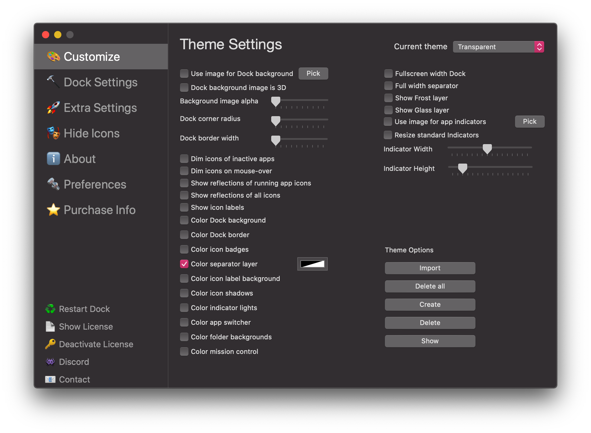

cDock 3
Dock customization for macOS 10.10 and above.
cDock 3 gives you full control over the Dock. There are tons of ways to customize the look and feel of the Dock. You can even enable some awesome hidden features. cDock is designed to make theming your Dock easy and robust on macOS 10.10 and up.
There are many ways to configure cDock as you wish. Give it a go and find out!
